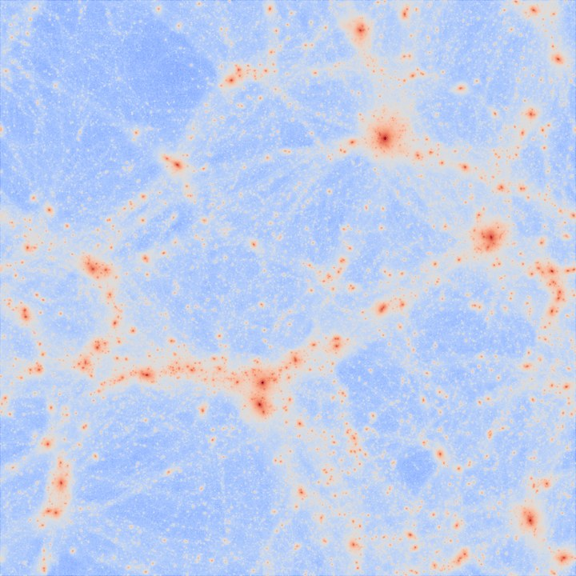

Theoretical and computational astrophysicist, ICRAR / The University of Western Australia.
My research is in cosmology and computational astrophysics, with a particular interest in what observations of galaxies can tell us about the nature of dark matter. More broadly, I am interested in how dark matter and baryonic physics jointly determine the structure and evolution of galaxies and the large-scale Universe, and in how reliably we can recover that underlying physics from simulations and observations.

Different dark matter theories can produce differences in the structure of galaxies and the cosmic web, but those differences can be confused with the effects of galaxy formation. Much of my current work is about separating the two: using targeted simulations to isolate the effects of different dark matter models, and then asking which of those differences survive into observable properties of galaxies.
I have also worked on a fairly broad range of related problems, including galaxy formation and dynamics, globular cluster evolution, stellar population synthesis, high-mass X-ray binaries and their contribution to the epoch of reionisation, and the use of H I surveys to understand the abundance and properties of galaxies.
I also find the computational side of this work completely absorbing — the codes, infrastructure and numerical methods that make these calculations possible — and I try to build things that other researchers can use.
This site collects what I work on, the software I maintain, and a few ongoing projects. It is deliberately plain, and will grow as time allows.